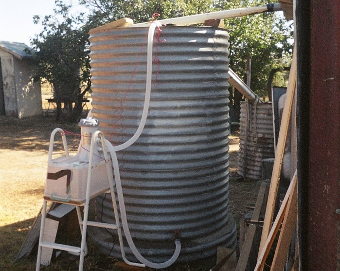
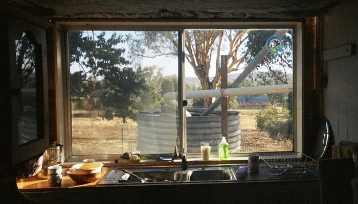

The First Tanks
We had originally intended to do this job in January because it involved filling a swimming pool and we might have had a bonus swim in the heat. But like most jobs it was later, longer and harder than we thought...Most of the water drained into the pool by gravity, the rest by the electric pressure pump. I made an attempt at fixing the holes in the bottom while it was here on the trailer:
Then we placed it on the pad we made from gravel and roofing iron.
But when we went to fill it up from the second tank to be moved, it leaked. We filled the pool right up to the top then drained the rest of the 2nd tank onto the new vege garden we've established in the other half of the block:
Then, with inspiration from Heath Robinson, we managed to cobble together enough hose to get from pool to tank. Plenty of odd bits of rope and knots etc to complete the picture:
While were about it we emptied the high tank :

And replaced a broken tap.
Also we put the pool filter to good use by hooking it up to the tank at the rear which is now our main tank. It got rid of quite a few mosquito wrigglers and seems to be a good method for cleaning tank water: 
So now we have tanks ready for our $2.50 shed:
And a nice view of Rye Park from the kitchen window: 
Home House October 2013 Asbestos Verandah Tanks Fort Veg Orchard Pacas